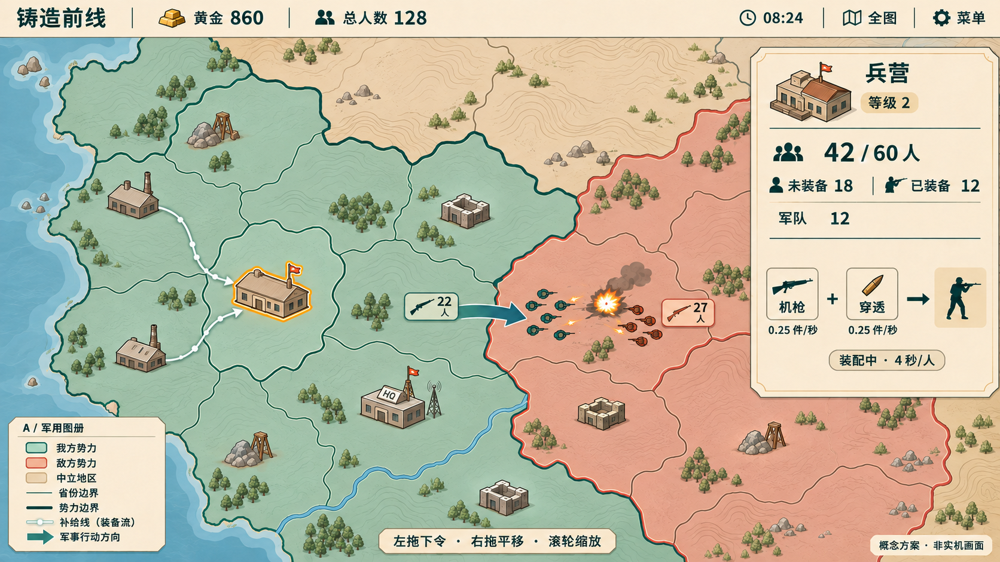
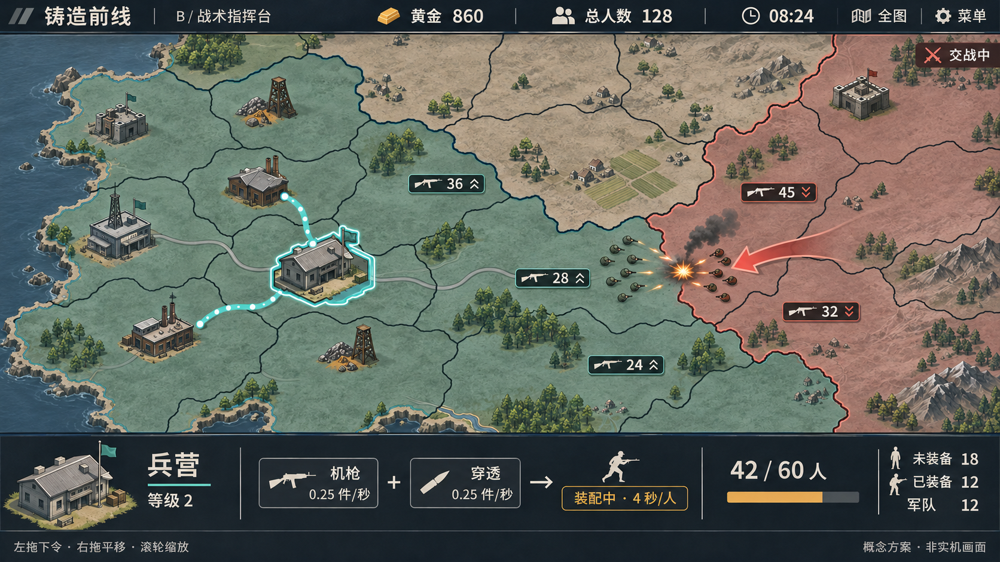
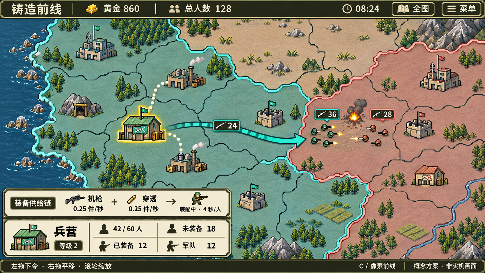
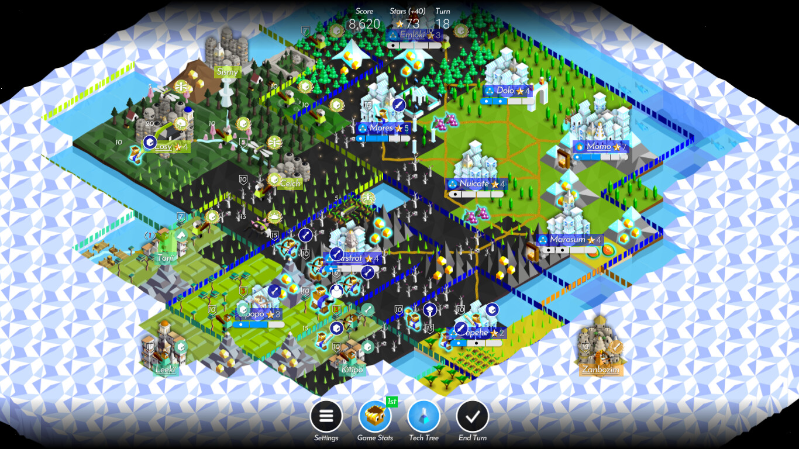
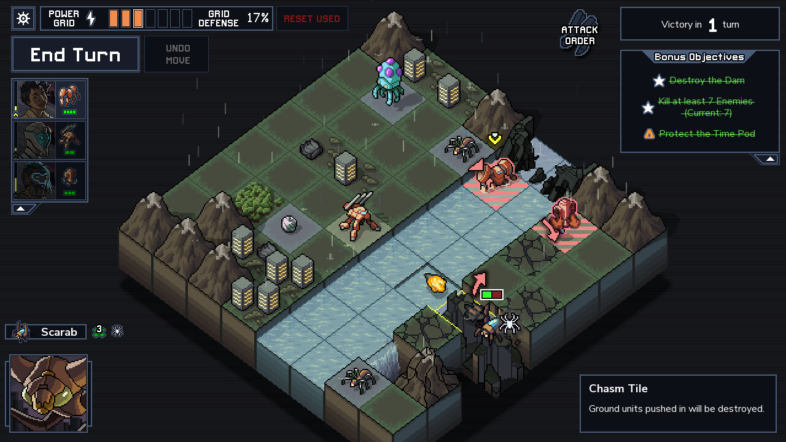
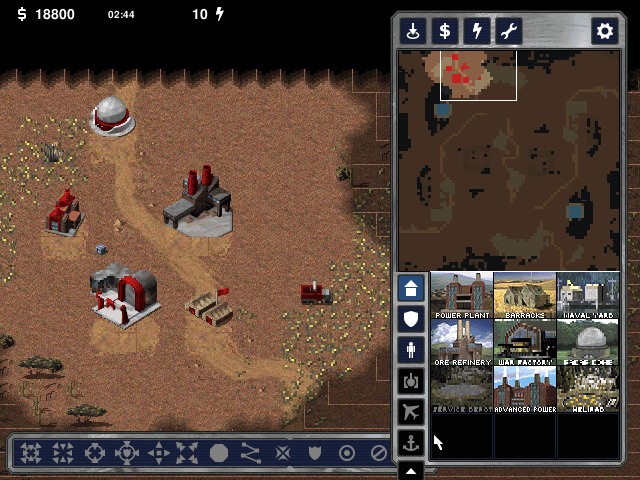
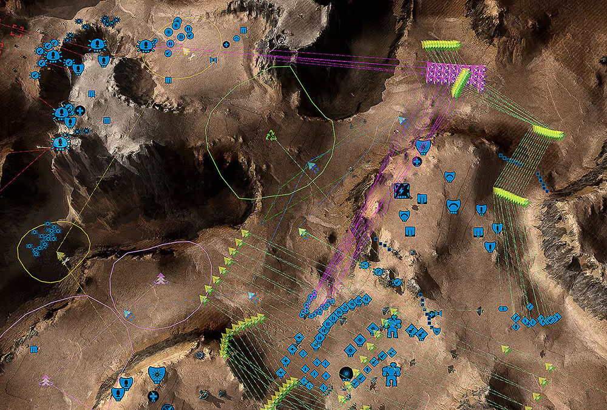
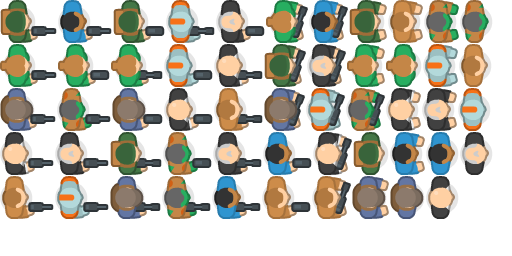
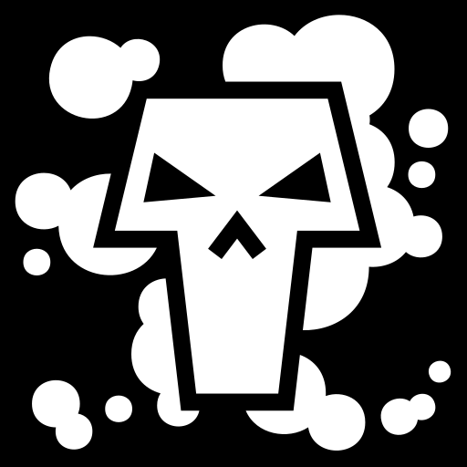

更新：用户已否定并要求删除下载的 UI 按钮、地图和建筑素材，相关文件及下方卡片已移除。本报告其他内容仅作历史研究记录。当前重点为独立预览中的正俯视士兵与持枪修正。
三张图为 AI 生成的视觉概念，不是实机截图，也不是下载素材的拼装效果。它们用于讨论配色、布局与信息层级；图中的透视、比例和个别符号仍需在定稿时统一为游戏实际需求。未修改游戏代码或发布资源。
三个方案
共同示例：黄金 860、总人数 128、选中兵营 42/60 人；机枪与穿透各输入 0.25 件/秒，装配 4 秒/人。人口与供给速率分别显示，不增加装备库存、训练队列、回合制或其他资源。
推荐作为基础A · 军用图册
暖白面板、青绿与珊瑚红领土、轻量地形纹理。右侧选中详情保持地图作为主体。

最接近现有结构，改造成本相对低；建议减少常驻图例，并在取消选择后收起面板。
推荐借鉴信息布局B · 战术指挥台
深色顶栏与底部横栏，把兵营、输入供给、装配结果与人数从左到右排列。

适合后续装备组合变多；底栏只在选择时出现。1280×720 下需控制栏高，避免压缩战场。
独立美术路线C · 像素前线
像素地形、清晰阵营边界与左下信息卡；中文字仍保持清晰，避免过小像素字体。

需要统一像素密度、缩放与朝向。Tiny Battle 可作为起点，但仍需补齐装备与动画，不能直接混入高清士兵。
推荐：以 A 的地图与色彩为基础，借用 B 的供给信息排列。如果偏好传统 RTS 的操作感，可进一步把详情改为可收起的底栏。C 是完整像素美术路线，适合明确喜欢该风格时选择。
实际查看的界面与战场参照
以下观察来自查看公开截图，不代表亲自游玩，也不以这些游戏的原始素材作为可复用资源。

已查看发行方 Steam 截图：资源集中于顶端，少量全局入口在底部，地形和阵营轮廓承担主要表达。借鉴地图优先与符号化，不采用方格、回合制和 3D 镜头。

已查看发行方 Steam 截图：深色边框、紧凑状态、攻击方向与高亮目标十分明确。借鉴信息优先级和像素轮廓，不增加回合结束、撤销和伤害预言功能。

已查看官方画面及 PortMaster 的完整 UI 截图：侧栏分类、资源区、地图与操作区有稳定分工。借鉴分组与扫描顺序，不照搬手动训练队列、雷达和电力系统。

已查看官网的战场标记展示：远景用单位符号、数量和军令线保持可读。该图不是完整 HUD 验收；仅借鉴战略标记，避免把所有路径与射程同时铺满地图。
素材筛选：按实际用途选，而不是把多个素材包混在一起
五个 Kenney 包已下载并核对随包许可；保留图集、矢量源文件和少量代表性样本，清理了不使用的重复图片、缓存和其他引擎格式。样本位于本目录的 samples 中。
CC0 · PNG 图集、独立 PNG、SVG

- 检查范围
- 已下载并查看角色图集；确认两个 SVG 源文件与 License.txt。
- 适合怎么用
- 最适合 A/B：正俯视人物、武器轮廓、箱桶和地表小物件。
- 需要补齐或注意
- 角色图集中不少是整身持枪姿态，不能直接套入当前身体/武器分离接口；需拆分和补齐机枪、狙击枪、火箭筒、喷火器。
版本记录：网页 1.0 / 2016；下载包名称 Topdown (Shooter) Pack
CC0 · 512×512 透明 PNG 等

- 检查范围
- 已下载，检查许可与贴图；保留枪口、火焰、烟尘、火花、灼痕等十张样本。
- 适合怎么用
- 优先用于 A/B：枪口闪光、命中火花、爆炸烟尘、毒气范围、据点受击。
- 需要补齐或注意
- 是粒子纹理，不是完成的动画；仍需设定发射、时长、尺寸与数量。C 应制作像素化风格一致的特效。
版本记录：网页记 1.0 / 2018；实际包许可写 1.1
多数 CC BY 3.0；部分作者为 CC0，逐项核对 · SVG

- 检查范围
- 已核对仓库许可并下载 Lorc 的 poison-gas.svg；其他候选未逐个验收。
- 适合怎么用
- 装备模块、毒气、压制、供给异常等语义图标。
- 需要补齐或注意
- 需要记录实际作者、许可与修改；统一描边、底板和颜色。复杂图案在小尺寸需简化。
版本记录：检索日期 2026-11-07，仓库 master
页面标 CC BY-SA 3.0；署名说明存在不一致 · 拆分 PNG；页面另提供 PSD

- 检查范围
- 已下载 ZIP 并查看胸甲、武器；确有头盔、肩部、手臂、腿部分层。未下载 PSD。
- 适合怎么用
- 适合作为分层方式与重装轮廓的参考，列为备选。
- 需要补齐或注意
- 暗色科幻风不易融入当前地图，缺少完整多武器套装；正式采用前应澄清授权说明。
版本记录：v0.7 / 2019，作者称 alpha
其他来源：Kenney 官方 itch · Top-down Tanks Redux（已核对 CC0，未下载；道路、树木可备选）；GitHub · Calinou/kenney-particle-pack（已核对 CC0，是 Godot 包装版，本项目直接使用原始 PNG 即可）。
怎样改善当前地图和战斗体验
没有找到一套无需修改、同时覆盖现代军事、不规则省份地图、四种武器、模块组合和正俯视分层动画的免费完整美术。最实际的路线是：复用经过筛选的地形/道具/特效/图标，定制少量关键建筑与兵种部件。